all transients in sector13 (26 total)
Each figure has three panels. The top panel shows the transient light curve, the middle panel shows the local background (estimated in an annulus), and the bottom panel shows a "background-model corrected" light curve. Details about the background model are in the README.
The vertical red line marks the time of discovery reported to TNS. Other useful metadata from TNS is in the figure title.
Note that the top and bottom panel are in magnitudes, while the middle panel is in differential flux units. The magnitudes are calibrated to the flux in the reference image used for image subtraction. Thus, flux from the host galaxy is included in these magnitudes.
3-sigma upper limits are plotted as triangles with no errorbars. A typical limiting magnitude is 19.6 in 30 minutes or 18.4 in 200 seconds (for low backgrounds).
The links allow you to download the light curve data as a text file.
More details in the README.
2019kag
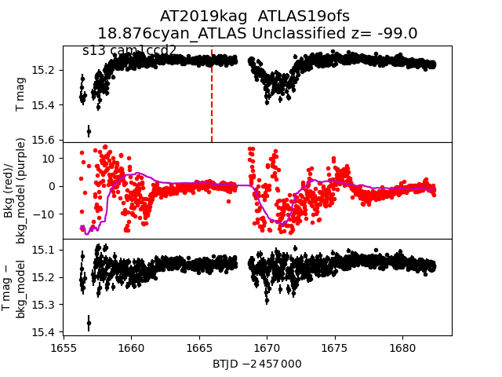
2019ibg
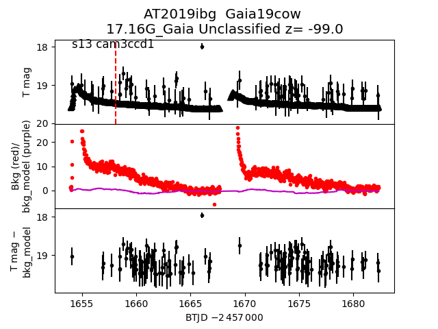
2019krd
 2019lqc
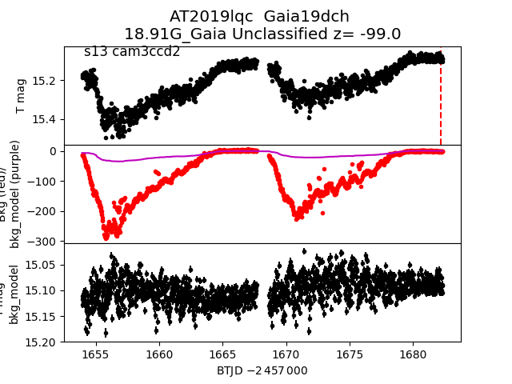
2019lld
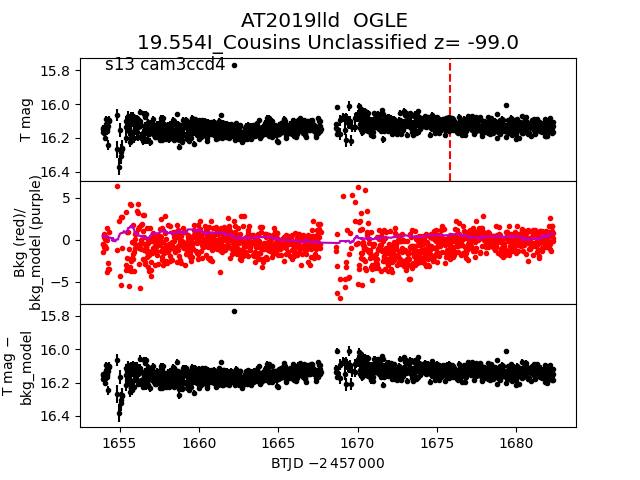
2019llg
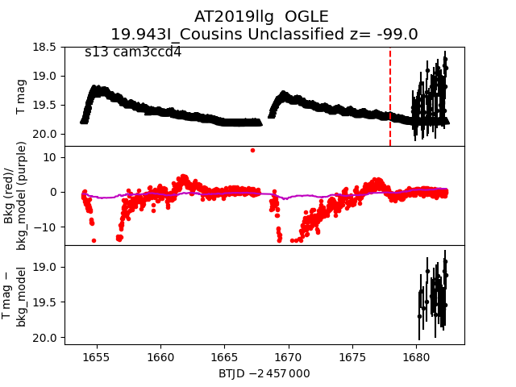
2019iac
2019lqc
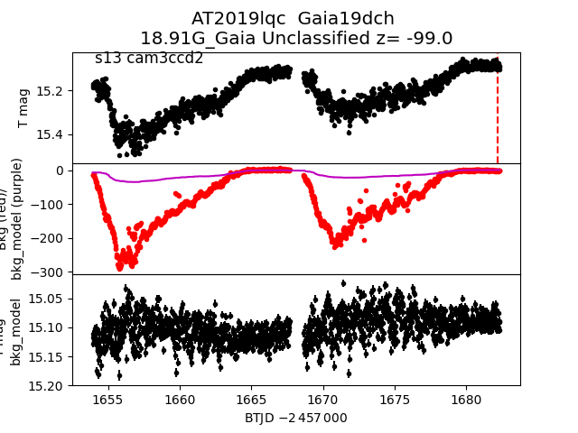
2019lld
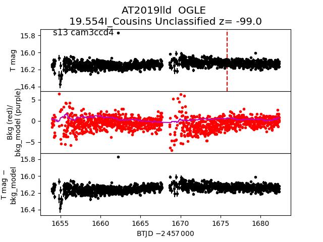
2019llg
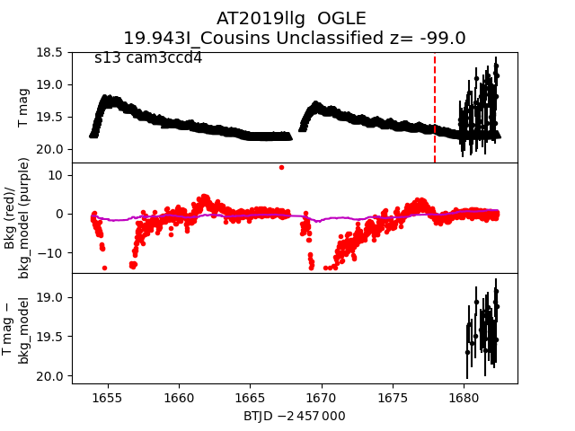
2019iac
 2019ify
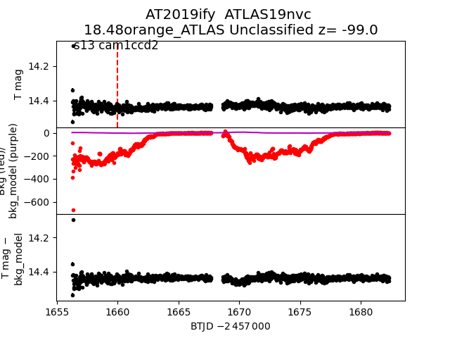
2019jyj
2019ify
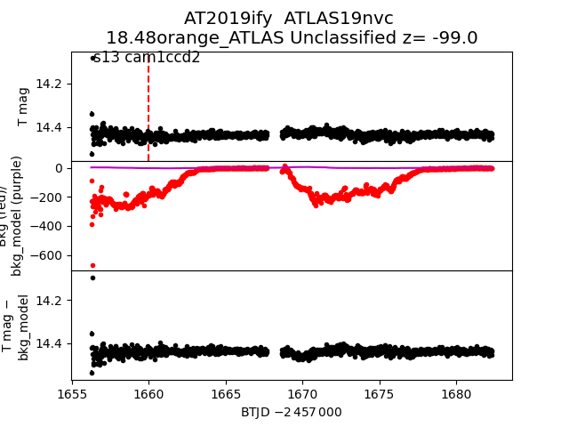
2019jyj
 2019llb
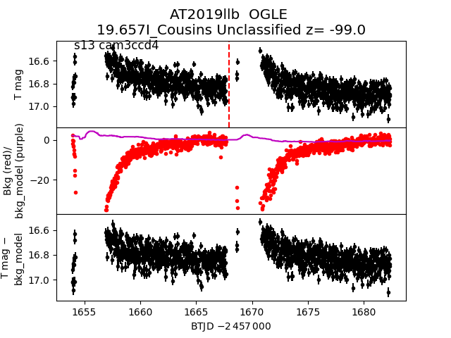
2019ihi
2019llb
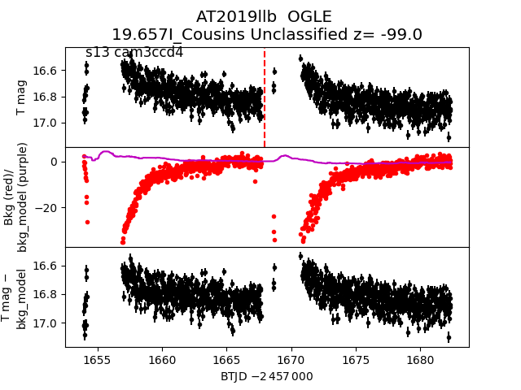
2019ihi
 2019kli
2019kli
 2019lbm
2019lbm
 2019kqq
2019kqq
 2019iiv
2019iiv
 2019kll
2019kll
 2019lli
2019lli
 2019iar
2019iar
 2019hyu
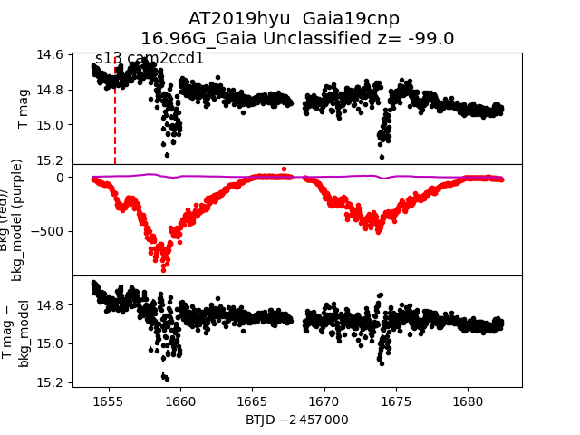
2019hvx
2019hyu
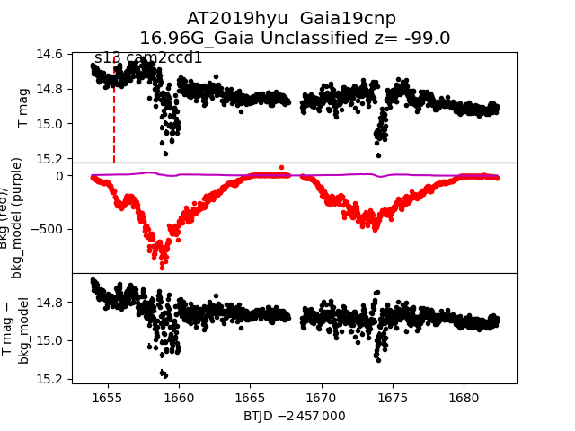
2019hvx
 2019lqg
2019lqg
 2019krj
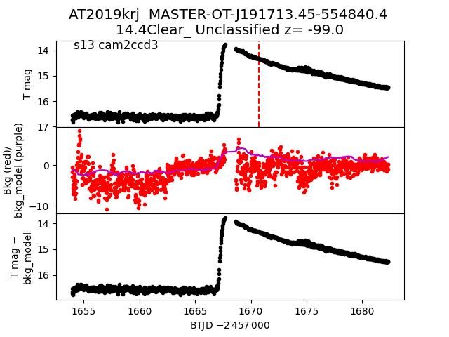
2019kvh
2019krj
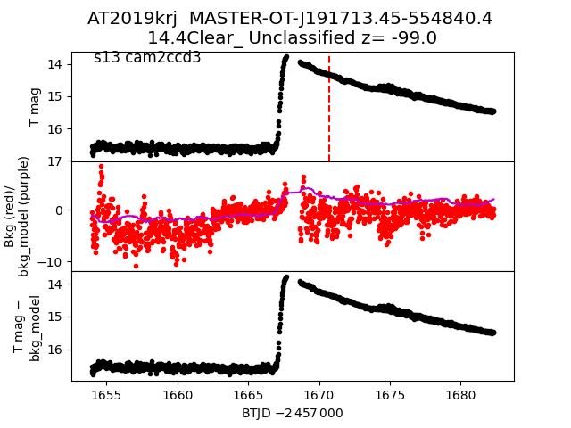
2019kvh
 2019iio
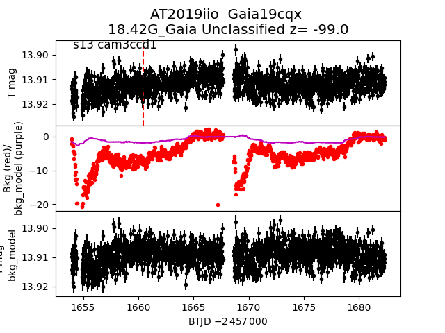
2019hzq
2019iio
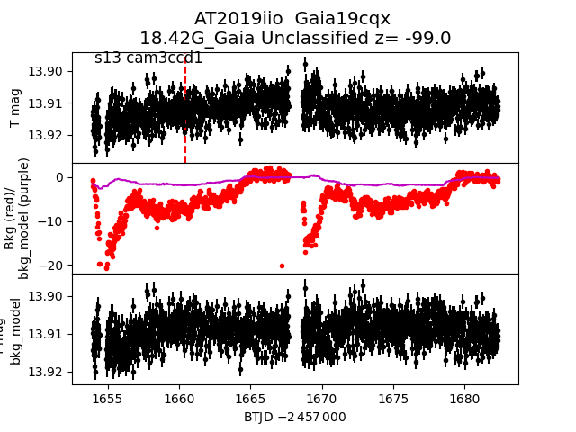
2019hzq
 2019kim
2019kim